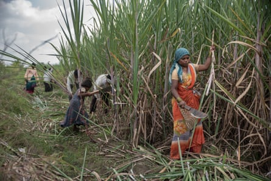
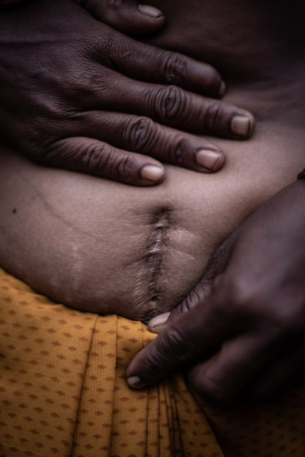

Women working in sugar cane fields are still being “pushed” to undergo surgery to remove their womb and enable them to work longer hours without period pain, activists in India’s state of Maharashtra have said.
Large numbers of women undertake long hours of manual work harvesting, gathering, lifting and loading large stacks of cane to trucks and tractors. A combination of poverty, low pay of less than £4 a day, and the threat of fines for missing or incomplete work days, was putting pressure on women to agree to hysterectomies, despite promises of reform, said labour rights’ campaigners.
They say women have been told that surgery would “release them from the monthly problem” of period pains and allow them to work longer hours.
Campaigners say the women are expected to work through menstruation, pregnancy and even miscarriage. A day off means losing a day’s wage and having to pay the labour contractor.Photograph: Chloé Sharrock/MYOP
“Period pain or pregnancy means more missed days and more lost wages. While [sugar cane] contractors may not physically force them to undergo hysterectomies, they create conditions that push women into it. For many who have already had children, it feels like the only way to keep working,” said Manisha Vaijnath Tokle.
According to surveys conducted by local NGOs in 2019, the rate of hysterectomies among women from one of Maharashtra’s main hubs for sugar cane workers, Beed district, was 36% compared with a national average of 3% .
Under pressure from activists, the local authorities agreed to investigate the issue and found more than 13,000 sugar cane workers in the district, including some under the age of 25, had had their wombs removed over the previous decade.
Subsequent reforms including medical checkups for women were meant to have improved the situation, but activists say little has been done to stop more women being pushed into having the surgery. In the past week, local media reports about high numbers of hysterectomies has prompted renewed outrage.
Campaigners blame child marriage, early sexual activity, pregnancy right around puberty and the gruelling workload on sugar cane farms done by girls in their early teens.
Asha, a 29-year-old, sugar cane cutter from Beed district has three children had a hysterectomy two years ago.Photograph: Chloé Sharrock/MYOP
They say girls as young as 12 are married off and accompany their husbands to areas needing sugar cane labourers. These girls and young women then have to work through all stages of reproductive stress.
“They’re not allowed a single day off – not even during menstruation, pregnancy or miscarriage. It’s bonded labour in every sense. They’re not only losing their daily wages if they take a break, but they also have to pay the labour contractor,” said Seema Kulkarni, a spokesperson for an alliance of organisations working for the rights of female farm workers.
On a visit to villages in Beed district last year, nearly three dozen women who had had a hysterectomy in the past decade told the Guardian they had expected to be able to get more work days – previously lost due to menstruation or pregnancies – after having the operation.
The women – nearly all of whom were under 40 – said they had approached doctors for a number of gynaecological ailments, including uterine cysts, irregular periods and even urinary tract infections, among other issues, and were advised that the surgery was a solution to their problems.
Beed district collector Vivek Johnson said that the recent local media reports had prompted inquiries from the prime minister’s office and that the Indian health department was closely monitoring the welfare of sugar cane labourers. He said new measures to tackle the issue were due to be announced in a forthcoming press conference.